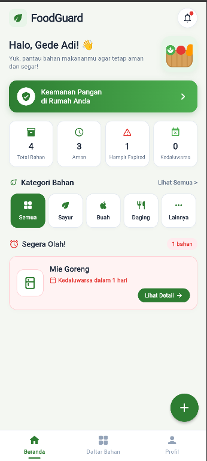
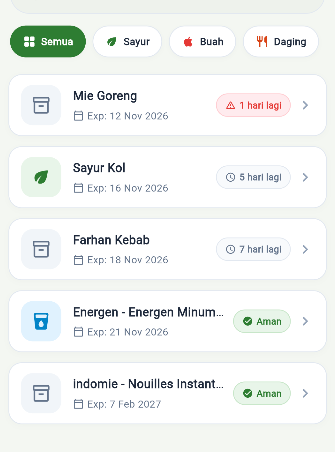
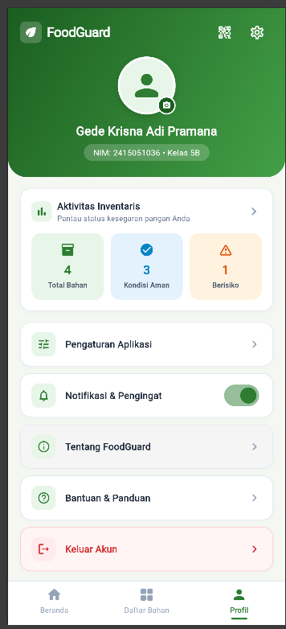
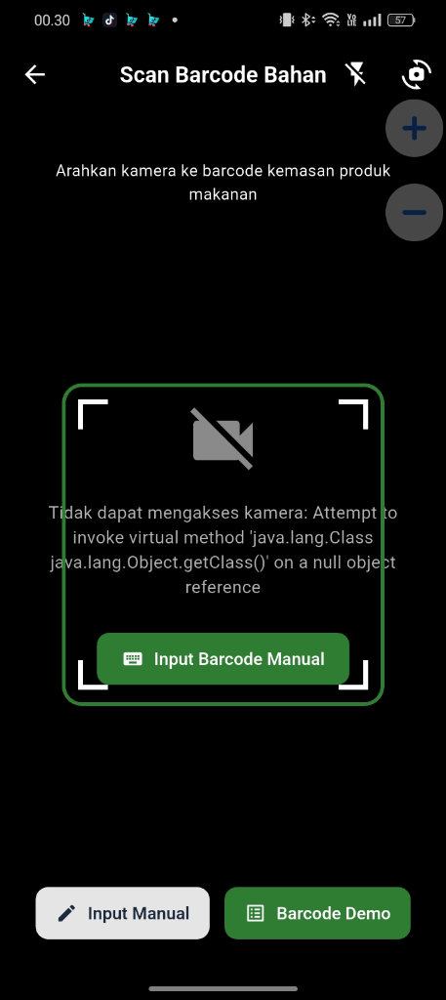
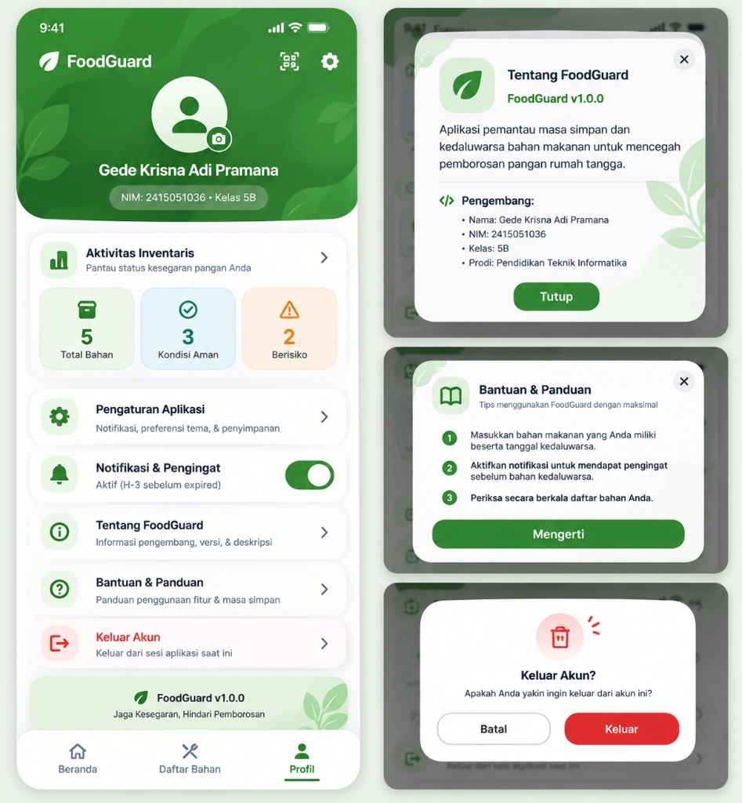
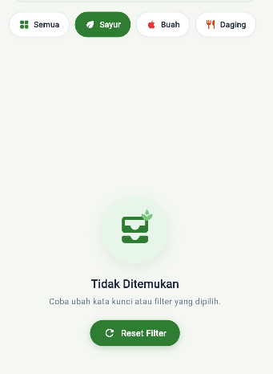
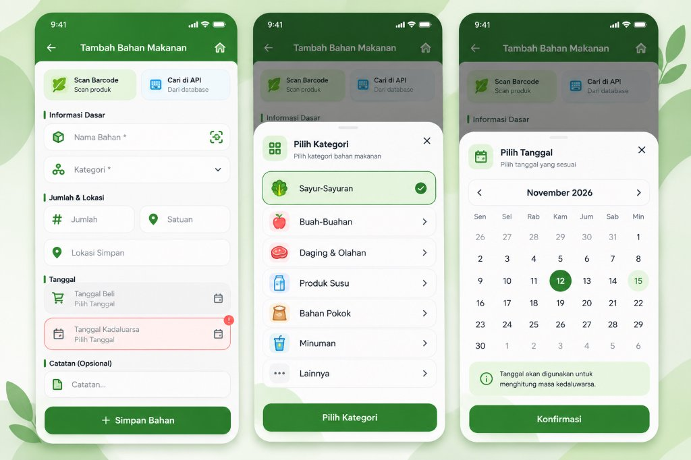
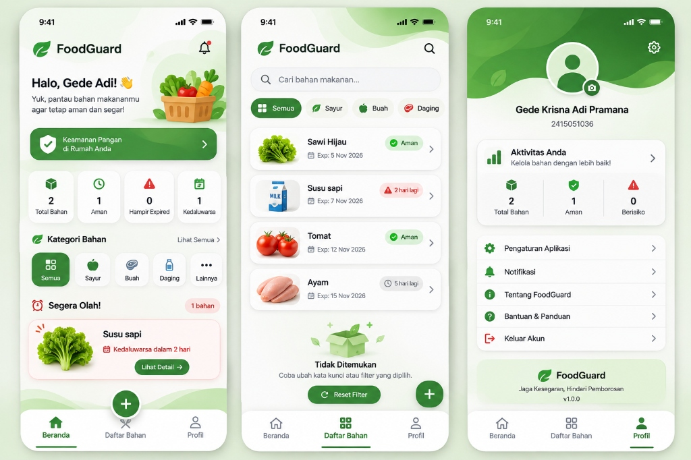

| Keterangan | Data Proyek UTS |
|---|---|
| Nama Mahasiswa | Gede Krisna Adi Pramana |
| NIM / Kelas | 2415051036 / Kelas 5B |
| Program Studi | S1 Pendidikan Teknik Informatika (PTI) — Universitas Pendidikan Ganesha |
| Nama Aplikasi | FoodGuard (Food Expiry Tracker & Waste Prevention) |
| Tema Aplikasi | Aplikasi Pemantau Tanggal Kedaluwarsa Bahan Makanan Rumah Tangga |
| URL GitHub Repository | https://github.com/gedek0815-maker/UTS_2415051036_Gede_Krisna_Adi_Pramana |
| Nama Branch Utama | main |
| Hash Commit Final | fd1a65b86acb05e51d37c0b3c032c241b36220fe (25 Meaningful Commits) |
| Backend / Database | Supabase (Cloud PostgreSQL) — Tabel bahan_makanan |
| REST API | Open Food Facts API (world.openfoodfacts.org) |
| Lokasi File APK Release | build/app/outputs/flutter-apk/app-release.apk |
Aplikasi FoodGuard dibangun menggunakan pendekatan Clean Architecture & Repository Pattern dengan pemisahan peran yang modular:
UI (Screens & Reusable Widgets) ➔ State Management (BahanProvider) ➔ Repository Layer (BahanRepository) ➔ Services (SupabaseService, FoodApiService, BarcodeService) ➔ Backend & API
| Layer | Folder | Deskripsi & Tanggung Jawab |
|---|---|---|
| Presentation | lib/screens/ & lib/widgets/ |
Menampilkan antarmuka responsif pengguna, menerima input formulir, dan mengonsumsi data dari Provider tanpa menyentuh service secara langsung. |
| State | lib/providers/ |
Menggunakan ChangeNotifier (Provider) untuk mengelola shared state: daftar bahan, filter kategori, status loading, empty state, dan error state. |
| Domain / Repo | lib/repositories/ |
Sebagai abstraksi antara data source dan UI state logic (Data Access Layer). |
| Data Source | lib/services/ |
Berisi SupabaseService (CRUD PostgreSQL Cloud), FoodApiService (REST API HTTP Client), dan BarcodeService. |
| Model | lib/models/ |
Berisi BahanMakanan dan FoodApiProduct dengan serialisasi fromJson() dan toJson(). |
Berikut adalah bukti tangkapan layar antarmuka fungsional aplikasi FoodGuard sesuai spesifikasi wajib UTS:








| No | Spesifikasi Wajib | Status | Implementasi dalam Kode |
|---|---|---|---|
| 1 | Screen & Navigasi (Min. 6 screen) | 100% Terpenuhi | 7 Screen fungsional (Home, List, Detail, Add, Edit, Barcode Scanner, Profile) dengan BottomNavigationBar dan passing data parameter. |
| 2 | Flutter UI & Components | 100% Terpenuhi | Penggunaan modular Scaffold, ListView, GridView, serta custom widgets: BahanCard, ExpiredBadge, KategoriChip, EmptyStateWidget. |
| 3 | Responsive Layout | 100% Terpenuhi | Menggunakan LayoutBuilder (breakpoint 600px): compact ponsel beralih ke NavigationRail dan GridView multi-kolom pada layar wide. |
| 4 | REST API Publik | 100% Terpenuhi | REST API Open Food Facts (GET) di FoodApiService dengan Dart Model FoodApiProduct.fromJson() dan penanganan 3 state: loading, error, empty. |
| 5 | Backend & Database (Supabase) | 100% Terpenuhi | CRUD lengkap Cloud Supabase (PostgreSQL) pada tabel bahan_makanan (id, nama, kategori, tanggal_expired, catatan, status) + Delete Confirmation Dialog. |
| 6 | State Management (Provider) | 100% Terpenuhi | BahanProvider dengan ChangeNotifier mengelola data, loading, error, dan shared state lintas screen (filter kategori & pencarian). |
| 7 | Clean Architecture | 100% Terpenuhi | Pemisahan terstruktur: models/, services/, repositories/, providers/, screens/, widgets/, main.dart. |
| 8 | Git & Version Control | 100% Terpenuhi | 25 Commit terstruktur, mencakup 21 Tahap pengerjaan dari inisialisasi hingga final README.md. |
Riwayat commit pada branch main menunjukkan proses pengembangan yang bertahap dan teratur (25 Commit):
fd1a65b Finalize FoodGuard app, add README and documentation
daaa7ed Fix mobile_scanner release crash: Proguard rules, disable minification, ML Kit dependencies
d4001dd Tahap 20: image picker (gallery & camera), UI polish, shared_preferences for profile photo
0feeb23 Fix: responsive layout (LayoutBuilder+NavigationRail) and architecture (extract FoodApiProduct model)
9df2cfa Complete UI refactor: custom nav, notifications, category filter, overflow fixes, and splash fix
84ba6e2 Refine UI consistency, fix responsive issues, and improve UX
c68f6db Add Profile screen with app info and settings
62e9e9c Add loading, error, and empty state handling across all screens
9d5f87a Add barcode scanner feature using mobile_scanner package
e7ed06c Implement soft delete and food consumption status management
3b05a21 Implement delete confirmation dialog and delete food functionality
6c464bc Add EditFoodScreen and wire edit actions in detail and list screens
7889849 Add AddFoodScreen with form validation and floating action button
d72eb4e Add FoodDetail screen with navigation and data passing
0937117 Implement responsive layout using LayoutBuilder for list and grid view
6c2be34 Build HomeScreen dashboard with summary cards and bottom navigation
1d14218 Add reusable widgets: BahanCard, ExpiredBadge, KategoriChip, EmptyState
f842c1a Build app theme, colors, and base UI setup
27ffa49 Implement BahanProvider with ChangeNotifier
aff98e0 Add BahanRepository as data access layer
8185597 Add SupabaseService with CRUD operations
9b2fa40 Setup Supabase connection and initialize in main.dart
904674c Add BahanMakanan model with expired helper methods
971a5cf Setup project architecture and folder structure
37af6d1 Initialize FoodGuard Flutter UTS project
| Kendala yang Dihadapi | Dampak | Solusi yang Diterapkan |
|---|---|---|
Crash Kamera pada APK Release (mobile_scanner & ML Kit) |
Fitur scan barcode berfungsi saat debug, tetapi memicu NullPointerException (getClass() on null) saat aplikasi di-build menjadi APK Release. |
Menonaktifkan minifikasi R8 pada android/app/build.gradle.kts (isMinifyEnabled = false) dan menambahkan aturan ProGuard khusus di proguard-rules.pro untuk menjaga integritas library Google ML Kit. |
| Shader Compilation / Impeller Issue | Layar putih atau shader compilation error pada perangkat Android dengan GPU driver tertentu. | Menambahkan EnableImpeller = false pada AndroidManifest.xml serta menyetel background splash screen hijau (#F4F7F2) pada launch_background.xml. |
| Responsivitas Layar Berbagai Ukuran | Potensi RenderFlex overflow saat orientasi landscape atau layar tablet. |
Menerapkan LayoutBuilder dan SingleChildScrollView secara konsisten dengan breakpoint 600px untuk transisi antara BottomNavigationBar ke NavigationRail. |